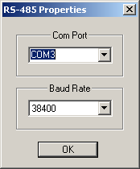

Before you can go online via RS-485 you have to configure the COM port to work with the USB/RS-485 or RS-232/RS-485 converter that you are using. To do so, choose Remote > RS-485 Setup from the menu. The correct settings will depend on your choice of converter. The RS-485 configuration is stored in the Windows Registry so that you only need to enter these settings once.
